Model skill assessment#
Simple comparison#
Sometimes all your need is a simple comparison of two time series. The modelskill.compare() method does just that.
import mikeio
import modelskill as ms
The model#
Can be either a dfs0 or a DataFrame.
fn_mod = 'data/SW/ts_storm_4.dfs0'
df_mod = mikeio.read(fn_mod, items=0).to_dataframe()
The observation#
Can be either a dfs0, a DataFrame or a PointObservation object.
fn_obs = 'data/SW/eur_Hm0.dfs0'
Match observation to model#
The match() method will return an object that can be used for scatter plots, skill assessment, time series plots etc.
cmp = ms.match(fn_obs, df_mod)
/opt/hostedtoolcache/Python/3.13.15/x64/lib/python3.13/site-packages/modelskill/obs.py:79: UserWarning: Could not guess geometry type from data or args, assuming POINT geometry. Use PointObservation or TrackObservation to be explicit.
warnings.warn(
cmp.plot.timeseries();
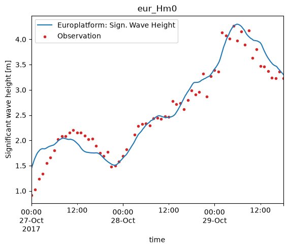
Systematic vs random errors#
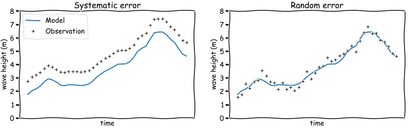
A model is an simplified version of a natural system, such as the ocean, and as such does not reflect every detail of the natural system.
In order to validate if a model does capture the essential dynamics of the natural system, it can be helpful to classify the mismatch of the model and observations in two broad categories:
systematic errors
random errors
A quantitativate assesment of a model involves calculating one or more model score, skill metrics, which in varying degrees capture systematic errors, random errors or a combination.
Metrics#
Bias is an indication of systematic error. In the left figure above, the model has negative bias (modelled wave heights are lower thatn observed). Thus it is an indication that the model can be improved.
Root Mean Square Error (rmse) is a combination of systematic and random error. It is a common metric to indicate the quality of a calibrated model, but less useful to understand the potential for further calibration since it captures both systematic and random errors.
Unbiased Root Mean Square Error (urmse) is the unbiased version of Root Mean Square Error. Since the bias is removed, it only captures the random error.
For a complete list of possible metrics, see the Metrics section in the ModelSkill docs.
To get a quantitative model skill, we use the .skill() method, which returns a table (similar to a DataFrame).
cmp.skill()
| n | bias | rmse | urmse | mae | cc | si | r2 | |
|---|---|---|---|---|---|---|---|---|
| observation | ||||||||
| eur_Hm0 | 66 | 0.05321 | 0.229957 | 0.223717 | 0.177321 | 0.967972 | 0.086125 | 0.929005 |
The default is a number of common metrics, but you are free to pick your favorite metrics.
cmp.skill(metrics=["mae","rho","lin_slope"])
| n | mae | rho | lin_slope | |
|---|---|---|---|---|
| observation | ||||
| eur_Hm0 | 66 | 0.177321 | 0.970199 | 0.999428 |
A very common way to visualize model skill is to use a scatter plot.
The scatter plot includes some additional features such as a 2d histogram, a Q-Q line and a regression line, but the appearance is highly configurable.
cmp.plot.scatter();
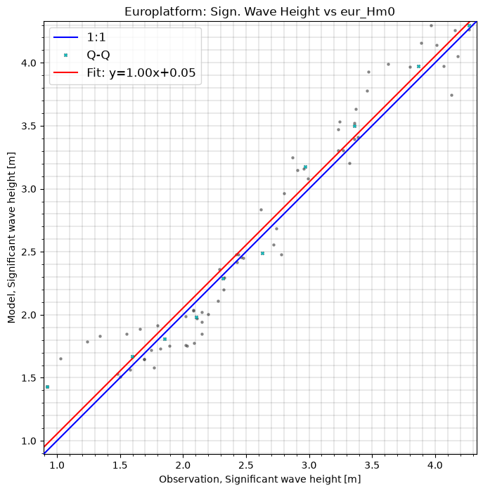
cmp.plot.scatter(binsize=0.5,
show_points=False,
xlim=[0,6], ylim=[0,6],
title="A calibrated model!");
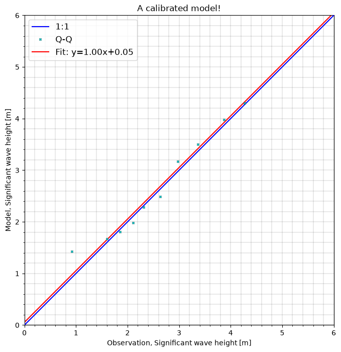
Taylor diagram#
A taylor diagram is a way to combine several statistics in a single plot, and is very useful to compare the skill of several models, or observations in a single plot.
cmp.plot.taylor();
Elaborate comparison#
fn = 'data/SW/HKZN_local_2017_DutchCoast.dfsu'
mr = ms.model_result(fn, name='HKZN_local', item=0)
mr
<DfsuModelResult>: HKZN_local
Time: 2017-10-27 00:00:00 - 2017-10-29 18:00:00
Quantity: Significant wave height [m]
o1 = ms.PointObservation('data/SW/HKNA_Hm0.dfs0', item=0, x=4.2420, y=52.6887, name="HKNA")
o2 = ms.PointObservation("data/SW/eur_Hm0.dfs0", item=0, x=3.2760, y=51.9990, name="EPL")
o1.plot.hist();
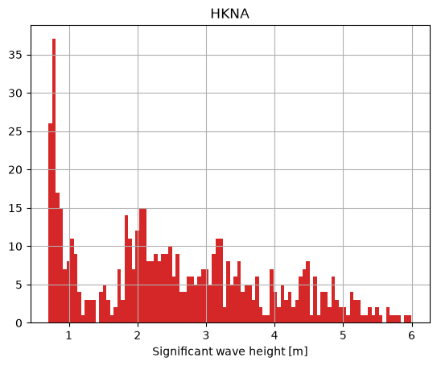
o1.plot();
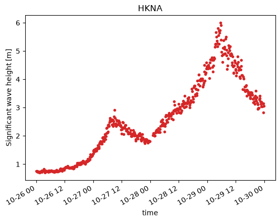
Overview#
ms.plotting.spatial_overview(obs=[o1,o2], mod=mr);
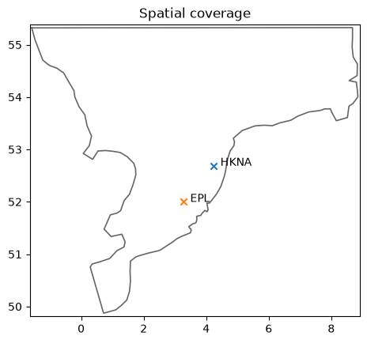
cc = ms.match(obs=[o1,o2], mod=mr)
cc
<ComparerCollection>
Comparers:
0: HKNA - Significant wave height [m]
1: EPL - Significant wave height [m]
cc.skill().style(precision=2)
/opt/hostedtoolcache/Python/3.13.15/x64/lib/python3.13/site-packages/modelskill/skill.py:804: FutureWarning: precision is deprecated, it has been renamed to decimals
warnings.warn(
| n | bias | rmse | urmse | mae | cc | si | r2 | |
|---|---|---|---|---|---|---|---|---|
| observation | ||||||||
| HKNA | 386 | -0.20 | 0.36 | 0.29 | 0.26 | 0.97 | 0.09 | 0.90 |
| EPL | 66 | -0.07 | 0.23 | 0.21 | 0.19 | 0.97 | 0.08 | 0.93 |
cc["EPL"].skill(metrics="mean_absolute_error")
| n | mean_absolute_error | |
|---|---|---|
| observation | ||
| EPL | 66 | 0.190754 |
cc["HKNA"].plot.timeseries(figsize=(10,5));
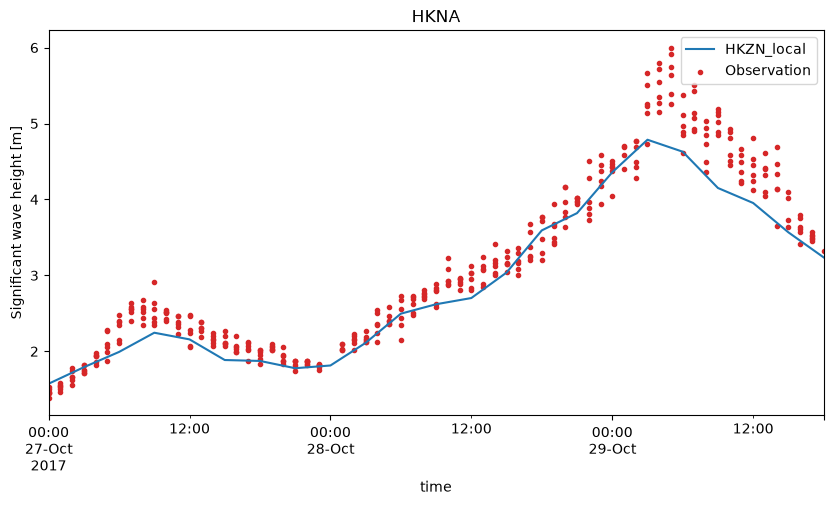
cc["EPL"].plot.scatter(figsize=(8,8), show_hist=True);
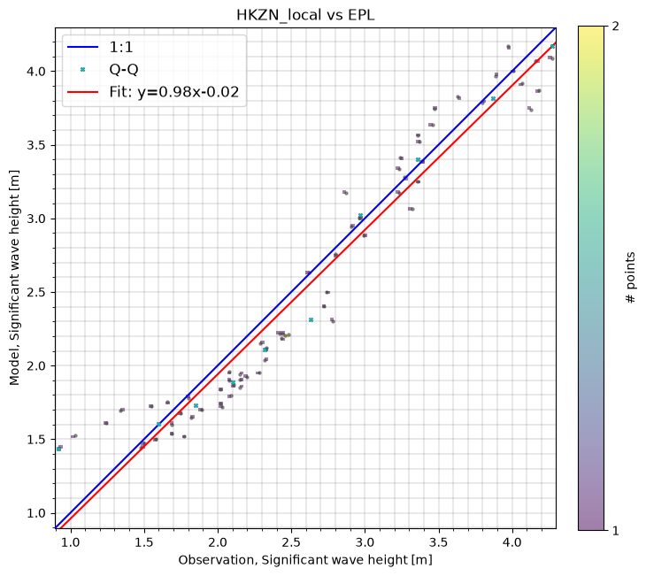
cc["EPL"].plot.hist(bins=20);
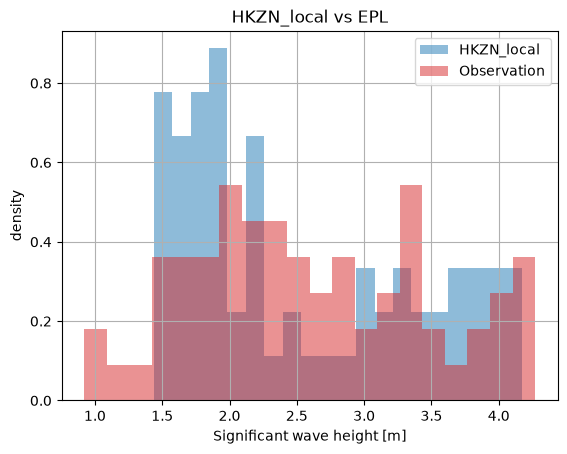
cc["HKNA"].plot.scatter();
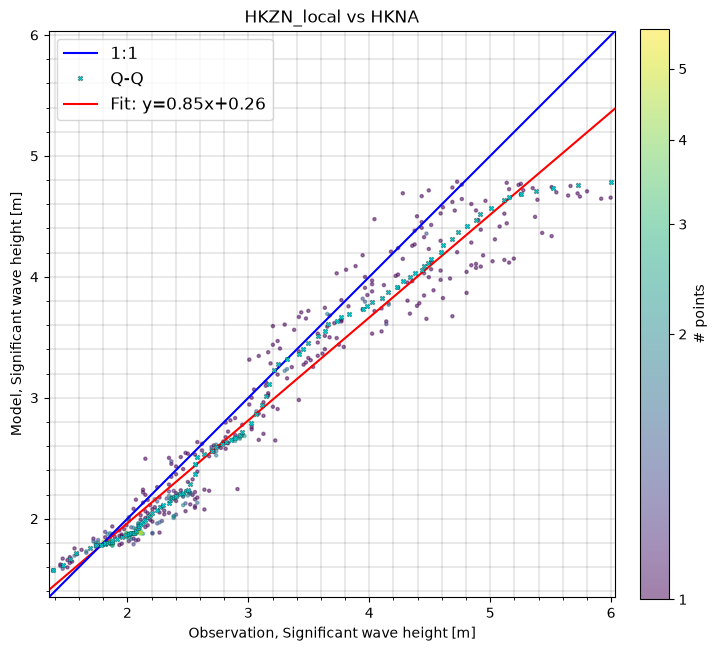